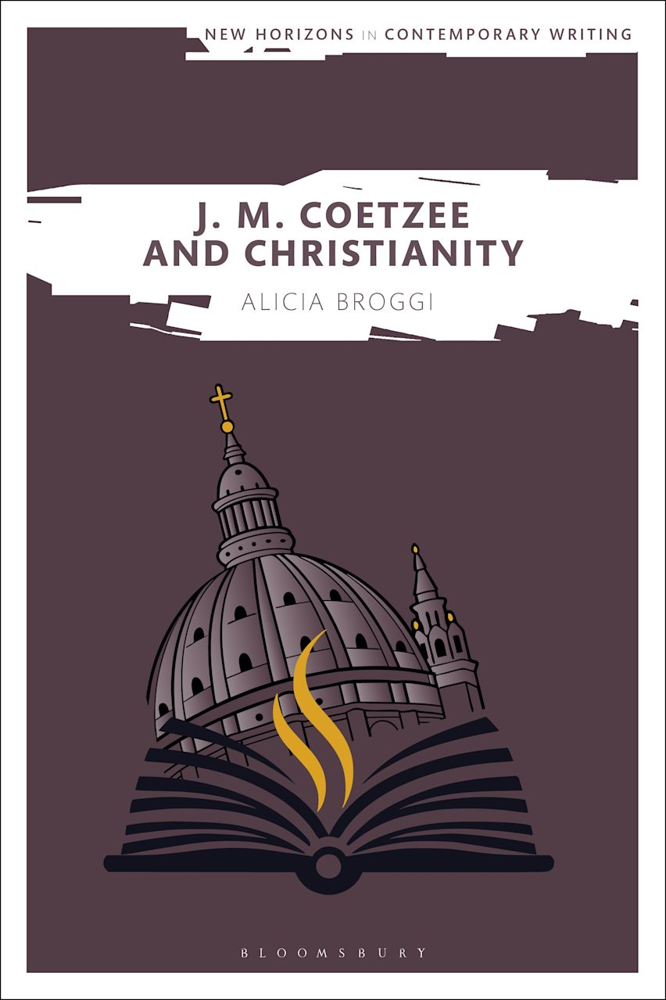

Welcome. I am a writer, researcher, and editorial consultant specializing in content editing, line editing, and narrative development for memoirs, academic publications, and digital strategy.
I hold a D.Phil. in English from the University of Oxford as a Clarendon Scholar, an M.Sc. from the University of Edinburgh, and degrees from Wheaton College.
Editorial Services
-
Structural & Content Editing: Comprehensive evaluation of manuscript structure, narrative pacing, and overarching arguments.
- Line Editing & Editorial Consulting: Refining prose style, sentence flow, voice, and clarity for academic, memoir, and public-facing writing.
- Research & Strategic Content: Conceptualizing and drafting profile features, analytical essays, and specialized research reports.
Featured Monograph

J. M. Coetzee and Christianity
Published by Bloomsbury Academic
An examination of religious themes, grace, secular ethics, and narrative self-consciousness in the fiction of Nobel laureate J. M. Coetzee.
Selected Scholarship & Writing
- Articles published in Literature and Theology and The Review of English Studies.
- Founder profiles and technical event coverage for Harvard in Tech.
- Essays and cultural commentary on literature, artificial intelligence, and digital aesthetics.
Contact & Connect
For editorial inquiries, consulting availability, or manuscript reviews, please reach out via email or connect professionally on LinkedIn:
- LinkedIn: LinkedIn Profile
- GitHub Portfolio: aliciabroggi.github.io